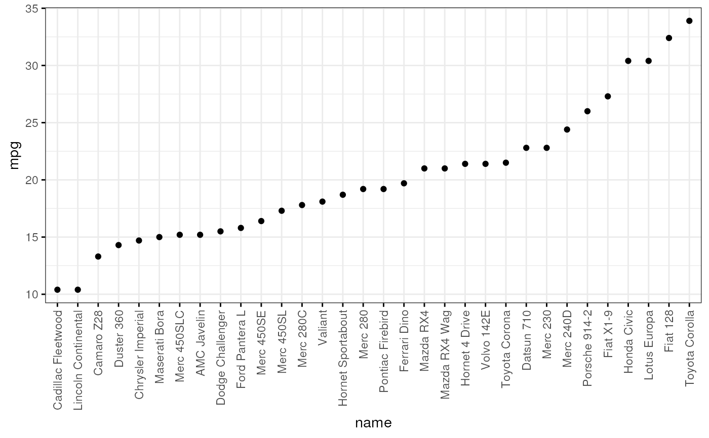
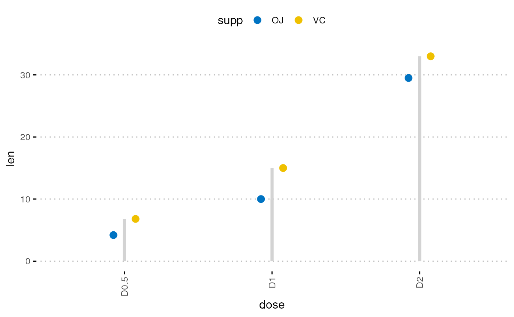

Cleveland's Dot Plots
ggdotchart.RdDraw a Cleveland dot plot.
ggdotchart(data, x, y, group = NULL, combine = FALSE, color = "black", palette = NULL, shape = 19, size = NULL, dot.size = size, sorting = c("ascending", "descending"), add = c("none", "segment"), add.params = list(), x.text.col = TRUE, rotate = FALSE, title = NULL, xlab = NULL, ylab = NULL, facet.by = NULL, panel.labs = NULL, short.panel.labs = TRUE, select = NULL, remove = NULL, order = NULL, label = NULL, font.label = list(size = 11, color = "black"), label.select = NULL, repel = FALSE, label.rectangle = FALSE, position = "identity", ggtheme = theme_pubr(), ...) theme_cleveland(rotate = TRUE)
Arguments
| data | a data frame |
|---|---|
| x, y | x and y variables for drawing. |
| group | an optional column name indicating how the elements of x are grouped. |
| combine | logical value. Default is FALSE. Used only when y is a vector containing multiple variables to plot. If TRUE, create a multi-panel plot by combining the plot of y variables. |
| color, size | points color and size. |
| palette | the color palette to be used for coloring or filling by groups. Allowed values include "grey" for grey color palettes; brewer palettes e.g. "RdBu", "Blues", ...; or custom color palette e.g. c("blue", "red"); and scientific journal palettes from ggsci R package, e.g.: "npg", "aaas", "lancet", "jco", "ucscgb", "uchicago", "simpsons" and "rickandmorty". |
| shape | point shape. See |
| dot.size | numeric value specifying the dot size. |
| sorting | a character vector for sorting into ascending or descending order. Allowed values are one of "descending" and "ascending". Partial match are allowed (e.g. sorting = "desc" or "asc"). Default is "descending". |
| add | character vector for adding another plot element (e.g.: dot plot or error bars). Allowed values are one or the combination of: "none", "dotplot", "jitter", "boxplot", "point", "mean", "mean_se", "mean_sd", "mean_ci", "mean_range", "median", "median_iqr", "median_mad", "median_range"; see ?desc_statby for more details. |
| add.params | parameters (color, shape, size, fill, linetype) for the argument 'add'; e.g.: add.params = list(color = "red"). |
| x.text.col | logical. If TRUE (default), x axis texts are colored by groups. |
| rotate | logical value. If TRUE, rotate the graph by setting the plot orientation to horizontal. |
| title | plot main title. |
| xlab | character vector specifying x axis labels. Use xlab = FALSE to hide xlab. |
| ylab | character vector specifying y axis labels. Use ylab = FALSE to hide ylab. |
| facet.by | character vector, of length 1 or 2, specifying grouping variables for faceting the plot into multiple panels. Should be in the data. |
| panel.labs | a list of one or two character vectors to modify facet panel labels. For example, panel.labs = list(sex = c("Male", "Female")) specifies the labels for the "sex" variable. For two grouping variables, you can use for example panel.labs = list(sex = c("Male", "Female"), rx = c("Obs", "Lev", "Lev2") ). |
| short.panel.labs | logical value. Default is TRUE. If TRUE, create short labels for panels by omitting variable names; in other words panels will be labelled only by variable grouping levels. |
| select | character vector specifying which items to display. |
| remove | character vector specifying which items to remove from the plot. |
| order | character vector specifying the order of items. |
| label | the name of the column containing point labels. |
| font.label | a list which can contain the combination of the following elements: the size (e.g.: 14), the style (e.g.: "plain", "bold", "italic", "bold.italic") and the color (e.g.: "red") of labels. For example font.label = list(size = 14, face = "bold", color ="red"). To specify only the size and the style, use font.label = list(size = 14, face = "plain"). |
| label.select | can be of two formats:
|
| repel | a logical value, whether to use ggrepel to avoid overplotting text labels or not. |
| label.rectangle | logical value. If TRUE, add rectangle underneath the text, making it easier to read. |
| position | Position adjustment, either as a string, or the result of a call to a position adjustment function. |
| ggtheme | function, ggplot2 theme name. Default value is theme_pubr(). Allowed values include ggplot2 official themes: theme_gray(), theme_bw(), theme_minimal(), theme_classic(), theme_void(), .... |
| ... | other arguments to be passed to |
Details
The plot can be easily customized using the function ggpar(). Read ?ggpar for changing:
main title and axis labels: main, xlab, ylab
axis limits: xlim, ylim (e.g.: ylim = c(0, 30))
axis scales: xscale, yscale (e.g.: yscale = "log2")
color palettes: palette = "Dark2" or palette = c("gray", "blue", "red")
legend title, labels and position: legend = "right"
plot orientation : orientation = c("vertical", "horizontal", "reverse")
See also
Examples
# Load data data("mtcars") df <- mtcars df$cyl <- as.factor(df$cyl) df$name <- rownames(df) head(df[, c("wt", "mpg", "cyl")], 3)#> wt mpg cyl #> Mazda RX4 2.620 21.0 6 #> Mazda RX4 Wag 2.875 21.0 6 #> Datsun 710 2.320 22.8 4# Basic plot ggdotchart(df, x = "name", y ="mpg", ggtheme = theme_bw())# Change colors by group cyl ggdotchart(df, x = "name", y = "mpg", group = "cyl", color = "cyl", palette = c('#999999','#E69F00','#56B4E9'), rotate = TRUE, sorting = "descending", ggtheme = theme_bw(), y.text.col = TRUE )# Plot with multiple groups # +++++++++++++++++++++ # Create some data df2 <- data.frame(supp=rep(c("VC", "OJ"), each=3), dose=rep(c("D0.5", "D1", "D2"),2), len=c(6.8, 15, 33, 4.2, 10, 29.5)) print(df2)#> supp dose len #> 1 VC D0.5 6.8 #> 2 VC D1 15.0 #> 3 VC D2 33.0 #> 4 OJ D0.5 4.2 #> 5 OJ D1 10.0 #> 6 OJ D2 29.5ggdotchart(df2, x = "dose", y = "len", color = "supp", size = 3, add = "segment", add.params = list(color = "lightgray", size = 1.5), position = position_dodge(0.3), palette = "jco", ggtheme = theme_pubclean() )